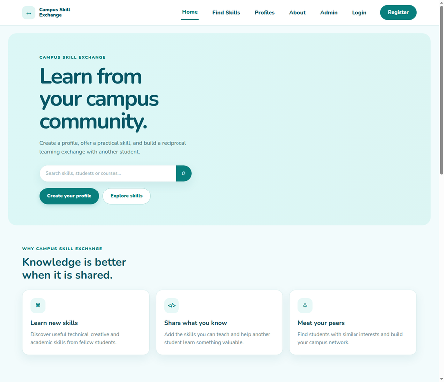

Explore the public prototype to see the student-first landing page and navigation flow.
Open live project ↗Students have useful skills, but often lack a simple way to find peers who can teach, practice, or learn alongside them.
Create a trusted campus space where every student can be both a learner and a mentor.
Planning and development — defining the MVP, user experience, and first technical foundation.
The current version is front-end focused. Profiles, sessions, login state, admin actions, and exchange requests are demonstrated through browser localStorage; a production release would move authentication, validation, and data persistence to a secure backend.
Finding the right peer to learn from is often informal and fragmented.
Build a focused space for students to exchange knowledge.
Turn the live concept into a working MVP with secure persistence.
Map student needs, user flows, and the first data model.
Build profiles, skill listings, search, and requests.
Add messaging, sessions, resources, and group learning.